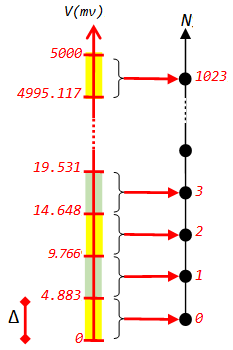

Entrées analogiques
En bref

- Arduino Uno possède 6 entrées analogiques, A0, A1, A2, A3, A4 et A5
- Pour mesurer l'entrée analogique A0 par exemple:
int N = analogRead(A0); // retourne un nombre compris entre 0 et 1023
float V = N * 5.0 / 1024.0; // Valeur en Volts de la tension sur A0
Dans l'instruction ci-dessus, Il est important que les opérandes soient de type
float pour empêcher le compilateur d'effectuer une division
entière, d'ou l'utilisation de
'5.0' et non pas '5'
Comment ça marche

- Grace au Convertisseur Analogique Numérique (ADC: Analog to Digital Converter) de son processeur, l'Arduino peut déterminer la valeur d'une tension appliquée sur une entrée analogique,
- L'Arduino dispose d'un seul ADC, mais de plusieurs entrées analogiques (généralement 6 sur une Arduino Uno). Ceci est rendu possible grâce à un multiplexeur analogique intégré, qui permet de sélectionner une des entrées analogiques pour la conversion,
- Lorsque l'on applique une tension analogique comprise entre 0 et 5 volts à l'entrée de l'ADC, il la convertit en un nombre entier N sur 10 bits, donc compris entre 0 et 1023,
- L'entrée analogique est une tension dans l'intervalle continu [0V , 5V], elle peut prendre une infinité de valeurs différentes. Or la sortie de l'ADC est un nombre entier de 10 bits, ce qui signifie qu'il n'a que 1024 combinaisons possibles (de 0 à 1023),
- Pour avoir une correspondance entre les entrées analogiques et les sorties numériques, l'intervalle [0V, 5V] est subdivisé en 1024 subdivisions. À chaque subdivision, l'ADC associe une valeur numérique,
-
Cette subdivision est appelée La Résolution du convertisseur, dans notre cas:
Δ = 5V / 1024 ≈ 0.004883V = 4,883 mV
-
Si on applique une tension V, le nombre N délivré par l'ADC n'est rien d'autre que le nombre de
subdivision Δ contenue dans la valeur V (N = V/Δ), d'où les expressions:
N = V * 1024 / 5
V = N * 5 / 1024
- Pendant longtemps (comme beaucoup de gens), j'ai utilisé 1023 à la place de 1024. Après avoir consulté le datasheet de l'ATmega328P au paragraphe: ADC Conversion Result, j'ai arrêté de faire cette erreur. Il est vrai que la différence est minime, mais il vaut mieux se conformer aux spécifications du datasheet.

Précision de mesure
Le nombre N fournit par le Convertisseur Analogique-Numérique correspond au nombre de subdivisions Δ contenus dans la valeur de la Tension V à mesurer => N = V / Δ. Or N est un nombre entier, il ne prend que la partie entière de (V/Δ). Donc, si on recalcule la valeur de V par l'expression V = N * Δ, on peut avoir une erreur de conversion qui (dans le cas le plus défavorable) avoisine 0.999Δ = Δ,
Par exemple (Voir figure) si V = 19.53 mV, l'ADC donne N = 3, Si on calcule la tension
correspondante, on
obtient V = 3 * 5000.0 mV / 1024.0 = 14.648mV, on a donc une erreur égale à:
19.53 - 14.658 = 4.882 mv ≈ Δ. C'est l'erreur max car cet exemple correspond au cas le plus
défavorable,
Amélioration de la précision
- Pour améliorer la précision, les Convertisseurs Analogique-Numérique sont conçus, grâce à un petit décalage vers le bas (voir figure) pour que l'erreur max de conversion soit égale à Δ/2 au lieu de Δ Dans le cas de l'Arduino, l'erreur maximale de mesure est égale à Δ/2 ≈ 2.44 mV
-
Cela peut être vérifié facilement sur la figure. On constate par exemple que toutes les valeurs
de tension dans l'intervalle [12.207mV , 17.090mV] donneront la valeur N = 3 à la sortie de
l'ADC. Or si on calcule V correspondant à N=3, on obtient V = 3 x R = 3 x 5000.0 / 2024.0 =
14.648mV
qui correspond à la valeur centrale de l'intervalle
Les valeur à l'extrémité de l'intervalle souffriront de l'erreur la plus forte -
Si on applique une tension de 14.648 mV sur une entrée Analogique
La lecture de l'ADC par analogRead() retourne N = 3
Le calcul donne V = 3 x 5000.0 / 1024.0 = 14.648 mV ==> Valeur Correcte -
Si on applique une tension de 17.089 mV sur une entrée Analogique
La lecture de l'ADC par analogRead() retourne aussi N = 3
Le calcul donne V = 3 x 5000.0 / 1024.0 = 14.648 mV
L'erreur est alors :
Erreur = 17.089 - 14.648 = 2.44 mV (Erreur maximale)
Amélioration de la précision grace à Vref

- Par défaut, le convertisseur de l'Arduino travaille dans l'intervalle [0V , 5V], on appelle ça la dynamique ΔV du convertisseur. La résolution est donnée par Δ = ΔV / 2^n
- Pour l'ADC de l'Arduino, n = 10 => Δ = 5 / 1024 = 4.88 mV => Erreur max = Δ/2 = 2.44mV
- Si la tension à mesurer est issue d'un capteur dont la sortie est toujours comprise dans
l'intervalle [0V , 1V], on gagnerait on précision si on peut obliger l'ADC à travailler avec une
dynamique ΔV = 1V.
On aura une résolution Δ = 1V/1024 = 0.97 mV et une erreur max = Δ/2 = 0.49 mV - Ceci est possible car l'ADC de l'Arduino travaille dans l'intervalle [0V , Vref]. Par défaut Vref = 5V mais on peut la modifier
- Pour modifier la tension de référence, on utilise la fonction analogReference() et éventuellement l'entrée AREF de l'Arduino
analogReference(DEFAULT); // Vref = 5V , errmax = 2.44 mV
analogReference(INTERNAL); // Vref = 1.1 V , errmax = 0.537 mV
analogReference(EXTERNAL); // Vref = entrée AREF , errmax = Vref/1024/2
Exemple basique
Chaque 1/2 seconde, on prend une mesure de l 'entrée A0 et on affiche le résultat sur le moniteur Série
void setup() {
Serial.begin(9600);
}
void loop() {
int N = analogRead(A0);
float V = N * 5.0 / 1024.0;
Serial.print("N = ");
Serial.print(N);
Serial.print(" => V = ");
Serial.print(V);
Serial.println(" Volts");
delay(500);
}
Exemple: Voltmètre à 6 canaux
Chaque 1/2 seconde, on mesure les 6 entrées analogiques et on affiche le résultat sur un afficheur LCD
#include
LiquidCrystal lcd(12, 10, 5, 4, 3, 2);
void setup() {
lcd.begin(16, 2);
}
void loop() {
float V;
lcd.clear();
V = analogRead(A0) * 5.0 / 1024.0;
lcd.print(V);
lcd.print(" ");
V = analogRead(A1) * 5.0 / 1024.0;
lcd.print(V);
lcd.print(" ");
V = analogRead(A2) * 5.0 / 1024.0;
lcd.print(V);
lcd.setCursor(0, 1);
V = analogRead(A3) * 5.0 / 1024.0;
lcd.print(V);
lcd.print(" ");
V = analogRead(A4) * 5.0 / 1024.0;
lcd.print(V);
lcd.print(" ");
V = analogRead(A5) * 5.0 / 1024.0;
lcd.print(V);
delay(500);
}

Exemple: Comparatif Vref=5V avec Vref=1.1V
- Dans cet exemple, on mesure une tension de 0.5V = 500mV, d'abord ave Vref=5V ensuite avec Vref=1.1V
- Le programme a été essayé sur Proteus Isis
- Les résultat montrent clairement l'intérêt de travailler avec la tension de référence interne (Vref=1.1V)
- Il est évident que si on veut mesurer une tension > 1.1V, on ne peut pas utiliser la tension de référence interne
void setup() {
Serial.begin(9600);
}
void loop() {
Serial.println("\r\nMesure d'une tension de 0.5V = 500mV");
analogReference(DEFAULT);
int N = analogRead(A0);
float V = N * 5000.0 / 1024.0;
Serial.print("Vref=5V => ");
Serial.print(V, 3);
Serial.print(" mV => erreur = ");
Serial.print(500 - V, 3);
Serial.println(" mV");
analogReference(INTERNAL);
N = analogRead(A0);
V = N * 1100.0 / 1024.0;
Serial.print("Vref=1.1V => ");
Serial.print(V, 3);
Serial.print(" mV => erreur = ");
Serial.print(500 - V, 3);
Serial.println(" mV"); delay(1000);
}

Mise en forme des signaux analogiques
L'ADC de l'Arduino ne peut numériser que les tensions comprises entre 0V et 5V. Si le signal analogique à numériser est trop faible, il faut l'amplifier avant de le numériser. S'il contient une portion négative, il faut le décaler vers le haut pour que toute ses valeur soient positives. Si le signal est trop grand, il faut l'atténuer pour qu'il rentre dans l'intervalle [0V , 5V]
En résumer, avant de numériser un signal, il faut s'assurer que sa valeur minimale est >= à 0V et que sa valeur maximale est <= 5V.
Les montages ci-dessous peuvent servir à la réalisation de cette tâche
Exemple :
- Le signal à mesurer est issu d'un capteur analogique qui fournit des valeurs comprises dans l'intervalle [-0.5V , +0.5V]
- Il faut le transformer pour pour le ramener dans l'intervalle [0V , 5V]
- On va utiliser l'amplificateur décaleur. La relation entre l'entrée et la sortie est Vs = A Ve + B Vr
- La dynamique du signal d'entrée est ΔVe = 1V, celle du signal de sortie est ΔVs = 5 => le gain de l'ampli sera A = 5/1 = 5
- Avec ce gain, le signal de sortie serait compris entre -2.5V et +2.5V donc il faut le décaler vers le haut de 2.5V => B Vr = 2.5
- Si on prend Vr = 5V => B = 0.5 => R2/R1 = A/B = 5/0.5 = 10 => on prend R2=10k , R1 = 1k
- Rb/Ra = A+B-1 = 5 + 0.5 - 1 = 4.5 => On prend Rb=45k , Ra = 10k